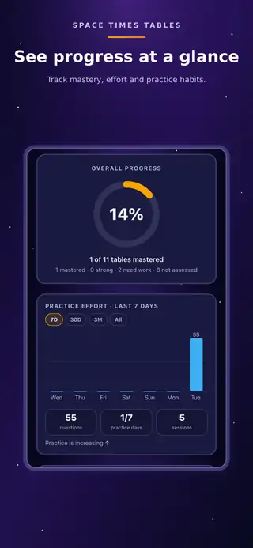

Find the gaps
A quick assessment pinpoints individual multiplication facts that need more work.
Find the gaps. Practise smarter.
See exactly which multiplication facts need more work — and what to practise next. A quick assessment leads into focused practice, visual support, games, progress tracking and parent-set goals and rewards.
Space Times Tables is built around a simple journey: find the weak facts, focus practice where it matters, use visual help when needed, then show clear progress and what to work on next.
A quick assessment pinpoints individual multiplication facts that need more work.
Parents can tie learning goals to real-world rewards that matter to their child.
Number Pop, Blaster and Block Match give children different ways to practise and build recall.
Visual blocks show the multiplication when an answer is not sticking.
See what has been mastered, what needs work and where to focus next.
Printables provide another way to keep learning going away from the device.
Focused practice, clear progress and a guided path through every times table.



Space Times Tables began when a father and his eight-year-old son tried existing times-tables apps, worked out what they liked and what they wished was better, and decided to build their own.
No ads or sign-in are required for the core experience. App Store availability will be added here when the app is ready.
App supportQuestions, feedback or testing enquiries?